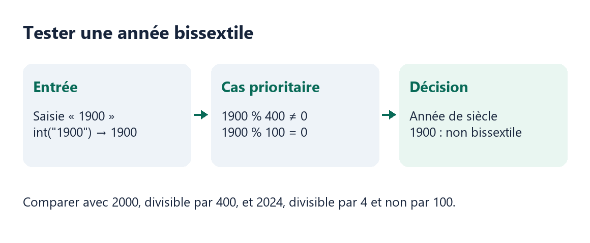

Comprendre le cours
Entrées, types et conditions
input() produit une chaîne. Convertis avec int() avant une addition ou une comparaison numérique. Une entrée comme « demain » provoque un ValueError. Tu peux l’intercepter et redemander une valeur.
== compare deux valeurs, tandis que = affecte une valeur à une variable. Dans if / elif / else, seule la première branche vraie s’exécute. Place les exceptions avant le cas général. Pour tester plusieurs mois, écris mois in (1, 3, 5, 7, 8, 10, 12).

Boucler et parcourir des chaînes
"réseau"[0] vaut "r" et "réseau"[0:3] donne "rés". Une chaîne est immuable. Pour changer une lettre, construis une nouvelle chaîne.
Initialise un compteur avant la boucle, puis augmente-le seulement quand la condition est vraie. Pour collecter plusieurs valeurs, crée plutôt une liste vide et ajoute chaque résultat avec append().
Listes, tuples, ensembles et dictionnaires
Une liste peut être modifiée et parcourue dans son ordre. Un tuple regroupe des valeurs et n’autorise pas le remplacement d’un élément. Un ensemble permet de dédupliquer et de vérifier qu’une valeur est présente.
Dans un dictionnaire, stats.get(adresse, 0) récupère le compteur ou zéro. Incrémente-le avec stats[adresse] = stats.get(adresse, 0) + 1. Cette structure conserve plus d’information qu’un ensemble.
Fonctions, fichiers et modules
Écris par exemple def double(n): return 2 * n, puis vérifie double(4) == 8. Pour un fichier, with open("index.html", "w", encoding="utf-8") as fichier: ouvre en écriture et remplace le contenu précédent. Utilise un chemin relatif pour que l’exercice soit reproductible.
Un module peut être chargé avec import math. Appelle ensuite la fonction qualifiée, par exemple math.sqrt(9). Choisis un nom de fichier qui ne masque pas un module standard.
Du cours aux TD et TP
Les questions de cette page sont reconstruites à partir des exercices et des solutions locales. Les scripts d’origine restent dans le dossier de travail.
- Conditions · Déterminer si une année est bissextile
- Tuples et dictionnaires · Détecter des adresses en double
- Modules · Générer une page HTML par écriture de fichier
- Chaînes et listes · Trier des saisies et calculer la moyenne des notes
- Modules · Générer une table de multiplication HTML à deux boucles
Questions TD & TP
Conditions · Déterminer si une année est bissextile
Énoncé reformulé. À partir d’une année saisie, dire si elle est bissextile.
- Convertis la saisie en entier. Utilise
annee % 400 == 0 or (annee % 4 == 0 and annee % 100 != 0)pour calculer un booléen. - Teste 1900, 2000, 2024 et 2023. Les résultats attendus sont faux, vrai, vrai et faux.
- Pour l’exercice du lendemain, détermine d’abord le nombre de jours du mois, puis teste le dernier jour. En décembre, le passage au mois suivant augmente l’année et fixe le mois à janvier.
Tuples et dictionnaires · Détecter des adresses en double
Énoncé reformulé. Lire cinq adresses puis déterminer si elles sont toutes distinctes.
- Boucle cinq fois et ajoute une valeur à la liste à chaque passage. Utilise
strip()pour retirer les espaces accidentels en bordure. - Compare
len(adresses)etlen(set(adresses)). Si les tailles diffèrent, au moins une valeur se répète. - Pour lister les doublons, incrémente un compteur par valeur et conserve les clés dont le compteur dépasse 1.
Modules · Générer une page HTML par écriture de fichier
Énoncé reformulé. Créer un fichier index.html depuis une fonction et y afficher un titre.
- Prépare un document contenant
<!doctype html>,<html lang="fr">, un en-tête avec encodage et un corps contenant un<h1>. - Ouvre
index.htmlen mode"w"avec UTF-8, puis appellefichier.write(contenu). Ferme le fichier en quittant le bloc. - Ouvre le fichier généré. Vérifie que le titre principal s’affiche et que les accents sont lisibles.
Chaînes et listes · Trier des saisies et calculer la moyenne des notes
Énoncé reformulé. Saisir les fruits puis les afficher triés. Dans les exercices suivants, générer des notes et calculer la moyenne d’un élève ou de plusieurs élèves.
- Vérifie que le nombre de fruits est positif ou nul. Répète la saisie avec
range(nombre)et ajoute chaque nom à la liste. Trie après la boucle. - Pour les notes, utilise
randint(0, 20)si l’exercice demande une simulation. Utiliseenumerate(notes, start=1)pour afficher le numéro et la note. - Avec plusieurs élèves et quatre notes chacun, initialise la liste de notes dans la boucle de chaque élève. Calcule la moyenne avec
sum(notes) / len(notes). Si la liste peut être vide, traite ce cas avant la division.
Modules · Générer une table de multiplication HTML à deux boucles
Énoncé reformulé. Générer le tableau de 0 à la borne donnée et vérifier les lignes, colonnes et résultats.
- Crée l’en-tête de colonnes avec
range(maximum + 1)afin d’inclure la borne. Utilise<th scope="col">. - Pour chaque ligne, écris son en-tête avec
<th scope="row">. Dans la boucle interne, écris une cellule<td>contenant le produit. - Pour la borne 8 du travail local, compte 9 lignes de valeurs et vérifie la cellule ligne 7, colonne 8, qui doit valoir 56.